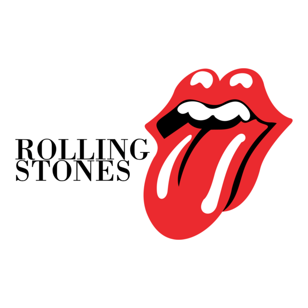

Harry Styles
O álbum homônimo de estreia de Harry Styles marca sua transição artística para um som profundamente influenciado pelo soft rock dos anos 70, britpop e baladas íntimas. Com composições vulneráveis sobre relacionamentos e isolamento, o projeto revelou ao mundo sua nova e autêntica identidade musical.

A Estética Intimista
Vulnerabilidade envolta em rock clássico e melancolia.

Recepção Crítica
Como os principais veículos receberam o primeiro passo solo de Harry.

★★★★☆"Ao longo de tudo isso, ele consegue se manter distante de todas as armadilhas que costumam sabotar a empreitada solo de uma estrela de boy-band. Mas como o disco inteiro comprova, não há nada de comum nesse cara."
Rolling Stone ★★★★☆
★★★★☆
"Styles se sai melhor quando evita os grandes gestos e foca nos pequenos detalhes, onde sua composição ganha um espaço real para respirar."
NME Magazine"Styles conseguiu o que poucos ex-membros de boy bands conseguem: criar um álbum de estreia solo que soa genuíno, artisticamente ambicioso e completamente distante do som que o tornou famoso."
U.S.A TODAY